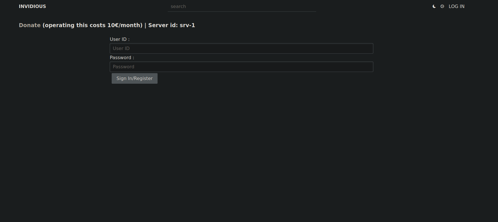
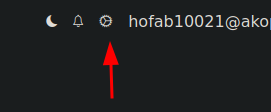
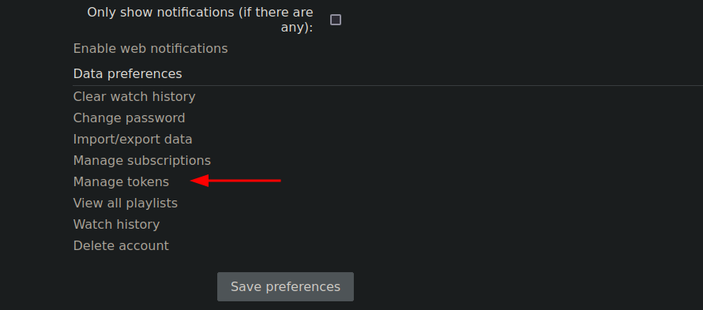
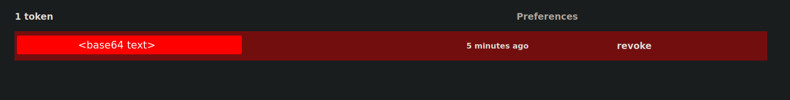
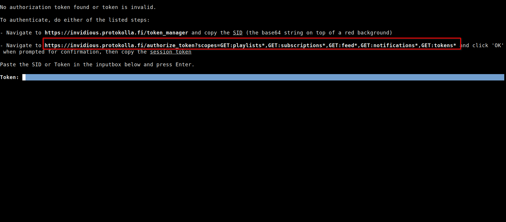
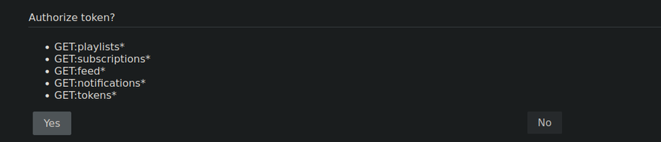
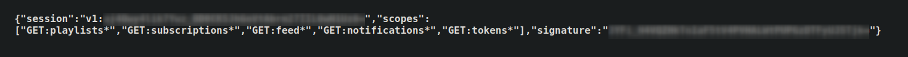
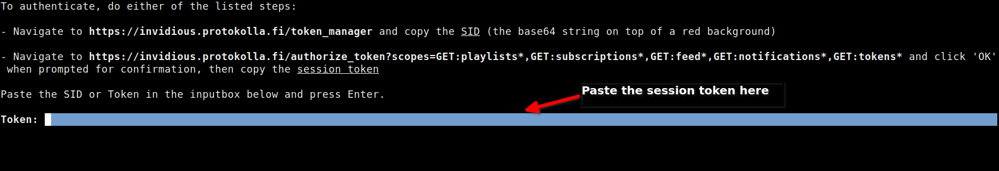

In order to use authentication-based features, like viewing and managing user feed, playlists and subscriptions, an account needs to be registered with a specific Invidious instance.
The following steps should be followed to obtain authentication for an instance:
- Obtain a user token
- Use invidtui to authenticate
These steps can be performed for multiple invidious instances.
User Token
For the user token, either a SID or a generated Session Token can be used.
SID
This is a base64 encoded text, that is automatically generated when you register an account with an Invidious instance.
To get your SID:
-
Login into your Invidious instance using a web browser
 -
Once you are redirected to the homepage, click on the ‘settings’ icon
 -
Click on ‘Manage tokens’
 -
Copy the Base64 encoded text on top of a red background 
Session Token
This is is a JSON text, that has to be explicitly generated after verification from the instance.
To get the link to your instance’s token manager, either:
-
Copy and navigate to the link shown in the dashboard if you are authenticating within invidtui, or ,
 -
If authenticating via the command-line, type
invidtui --force-instance <instance name> --token-link, copy and navigate to the displayed link.
Once the link has been opened in a web browser:
-
After the page loads, press ‘Yes’ and wait for the page to stop loading.
 -
Copy the session token displayed on the webpage.

Authentication
Once the user token has been obtained, you can finish authentication either within invidtui or via the command line.
Within InvidTUI
To authenticate within InvidTUI:
- First, launch invidtui with the instance
invidtui --force-instance <instance name>
- Once invidtui has initialized, open the dashboard, paste the user token in the inputbox and press
Enter
The dashboard should then load the feeds from the authenticated user account.
Via the Command Line
To authenticate via the command line, type:
invidtui --force-instance <instance name> --token <user token>
And invidtui should initialize and authenticate the user with the instance.